Интересные места Омской области

Вы приехали в Омскую область и хотите посмотреть различные красивые места? Или вы думаете, где можно остановиться? Я составила небольшой путеводитель, благодоря которому вы можете посетить красивые места, провести время в одиночку или с семьёй или друьями, а также с пользой для здровья.
Озеро Чередовое

Озеро Чередовое — самое большое озеро в Омске, расположенное в южной части Ленинского округа. Грунт дна песчаный. Берега озера богаты растительностью; тростник образует на них густые заросли в которых обитают утки. Чередовое озеро - очень хорошее место для рыбалки. В конце семидесятых годов в него были выпущены мальки карпа, щуки, леща, чебака, окуня. В последние годы в озере завелся ротан.
Озеро Черталы
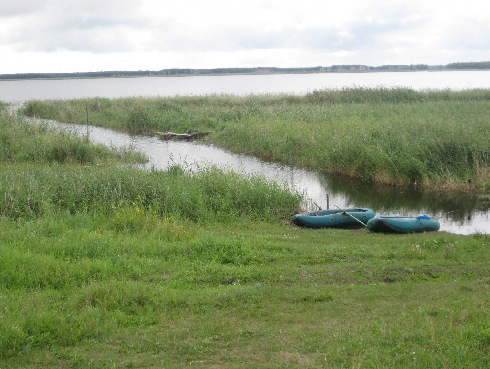Озеро Черталы, находящееся в Тарским районе, хорошо известно рыбакам. Славиться оно хорошими уловами и своей труднодоступностью. Путь до озера Черталы — это больше полусотни километров в целик, по лесу и руслу реки Туй. Маршрут через Черталы был проложен по настоянию и старейшего рыболова-спортсмена Андреича.
Улов на озере Черталы очень хороший. Говорят, что там можно поймать очень крупную рыбу. Люди ездят туда, как зимой, так и летом.
Озеро Ик
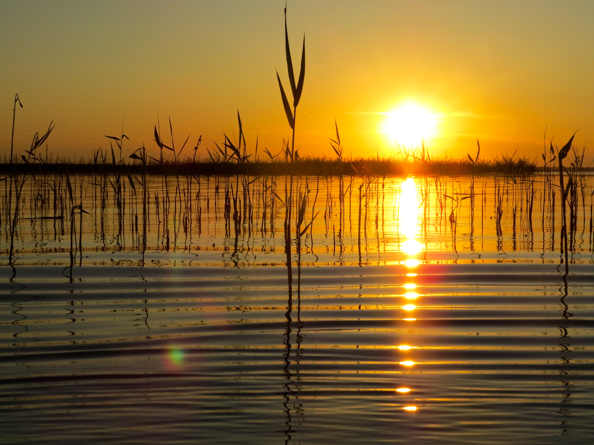Озеро Ик, расположенное в Крутинском районе Омской области, является одним из самых популярных в округе месте как для спокойного пляжного отдыха, так и для любителей летней и зимней рыбалки. Озеро Ик включено в список Больших Крутинских озер, наряду с озерами Салтаим и Тенис. Его юго-западные и северо-восточные берега обрамлены возвышенностями, в некоторых частях подходящими вплотную к воде, отчего берега здесь обрывистые, крутые и высокие — от 4 до 6 метров над водной поверхностью.
Озеро Тенис
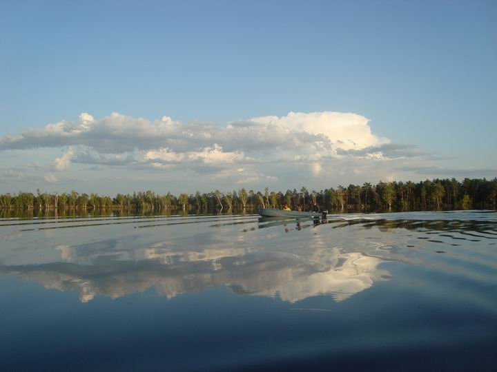Озеро Тенис — это природный водоем, расположенный в Омской области, на юге Западно-Сибирской равнины. Относится он к Иртышской озерно-речной системе и является вторым по величине водным объектом в группе Больших Крутинских озер. Через озеро Тенис протекает левый приток Иртыша — р. Оша. Также в водоем впадают реки Карасук, Балка сухая, Тлеутсай, теряющиеся среди многочисленных бессточных прудов. Наиболее высокие уровни воды наблюдаются в мае — июне, низкие — в период с сентября по октябрь.
Озеро Камышлово
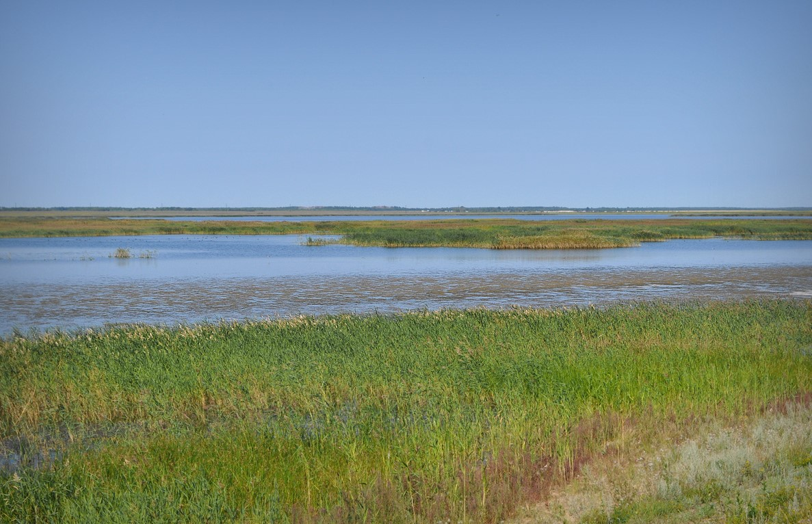Камышлово озеро расположено на долине реки Камышловки. Это солёное озеро очень хорошо известно жителям, так как расположено на территории бывшей Покровской крепости вместе с Покровским и Пикетным озёрами.
Озеро хорошо известно рыбакам, так как славится хорошим уловом. Вокруг озера очень красивая флора и фауна. Единственный минус - неприятных запах у воды.
Озеро Ульжай
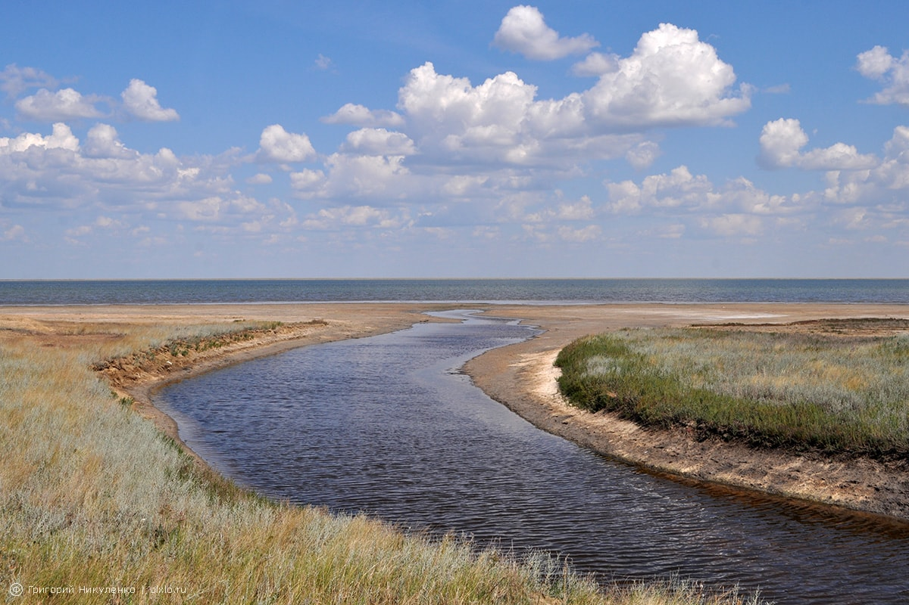Озеро Ульжай (Ульджай) расположено в северо-западной части Курумбельской степи. Наряду с озером Эбейты Ульжай — самое крупное по площади и запасам лечебных грязей соленое озеро Омской области. Лечебная грязь Ульжая представляет собой черную и маслянистую субстанцию, напоминающую пластилин, без яркого запаха. Ульжай - отличное место, чтобы провести время приятно и полезно для здоровья.
Озеро Эбейты

Озеро Эбейты находится в Омской области, оно раскинулось на стыке границ Москаленского, Исилькульского и Полтавского районов. Это самый большой соленый водоем области, который славится богатыми запасами лечебных грязей. Местные жители называют его Мертвым морем.
Ежегодно там отдыхает множество гостей, которые приезжают не только насладиться окружающими красотами, но и оздоровиться.
Озеро Шайтан
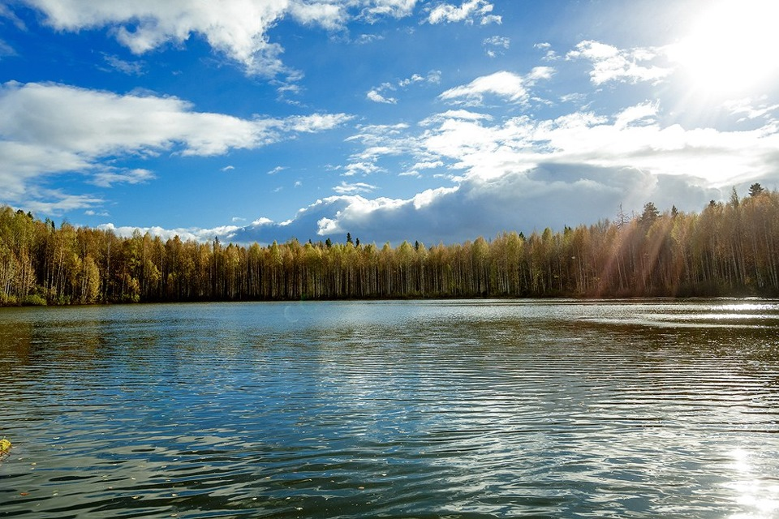Озеро Шайтан — пожалуй, главная природная достопримечательность Уржумского района Кировской области. Её своеобразие привлекает в здешние места немало туристов. Озеро не может похвастаться большими размерами. Его площадь составляет всего около 2 га. Но озеро Шайтан в Кировской области интересно совсем не этим. Главная его изюминка — появление на поверхности дрейфующих островков, с растущими деревцами и кустарниками. Самые прочные из них могут выдержать до 4 человек, а самые крупные — получают имена от местных жителей.
Озеро Линёво
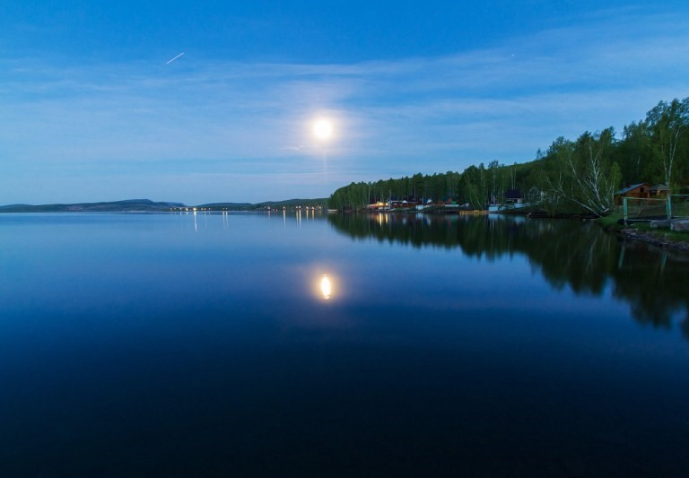Озеро Линево является одним из пяти озер, образовавшихся, согласно легенде, в результате падения расколовшегося на пять частей космического метеорита. Водоем расположен в Муромцевском районе Омской области. Все пять водоемов связаны между собой разными легендами и, как предполагается, подземной рекой. Несмотря на удаленность уникального водного объекта от крупных населенных пунктов, озеро Линево посещают тысячи отдыхающих. Существует легенда о том, что искупавшись в каждом из них по очереди, можно излечиться сразу от всех недугов и омолодиться.
Солёное озеро

Озеро Солёное расположено в черте города на территории Ленинского округа около улицы им. Воровского. Является гидрологическим памятникам природы Омской области. Озеро относилось к хлоридно-карбонатно-натронно-магяезиальным. Вода в озере мутная, зеленовато-желтого цвета, на вкус неприятно-горькая. Озеро имеет бальнеологическое значение и имеет репутацию лечебного. В 1923 году на озере был организован курорт «Карьер», в котором осуществлялись отдых и лечение горожан.
Озеро Салтаим
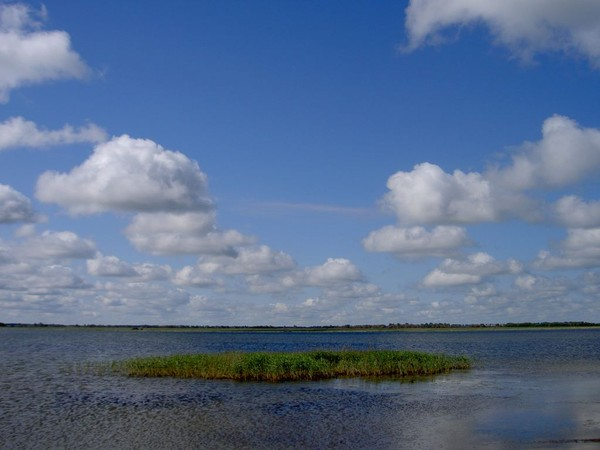Салтаим находится в Крутинском районе Омской области недалеко от шоссе E-30. Входит в состав Больших Крутинских озер. Лидирует среди «собратьев» по площади водного зеркала, составляющей 146 км2.Озеро Салтаим - это место, куда стоит приехать ради хорошего улова и размеренного созерцательного отдыха. Мир фауны представлен 14 видами рыб, а на заросших камышом плавунах гнездятся редкие водоплавающие птицы. Помимо гусей, уток и куликов здесь можно увидеть краснокнижные виды — белую цаплю, лебедя-шипуна и кудрявого пеликана.
Птичья гавань
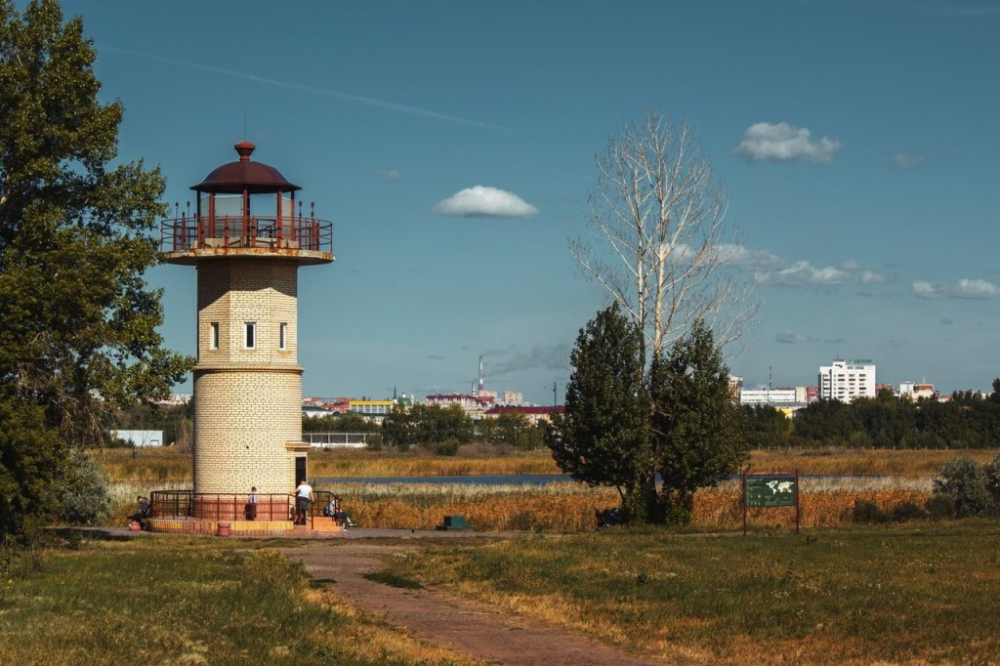Природный парк «Птичья гавань» — особо охраняемая природная территория в пойменной части левобережья Иртыша, расположившаяся в центральной части города Омска, с противоположной стороны Ленинградского проспекта от парка 30-летия Победы. «Птичья гавань» является одним из двух водных природных парков в мире (второй находится в Нью-Йорке) и единственным в России, который находится в черте большого города. Общая площадь парка по разным оценкам составляет от 110 до 170 гектаров
Большереченский зоопарк
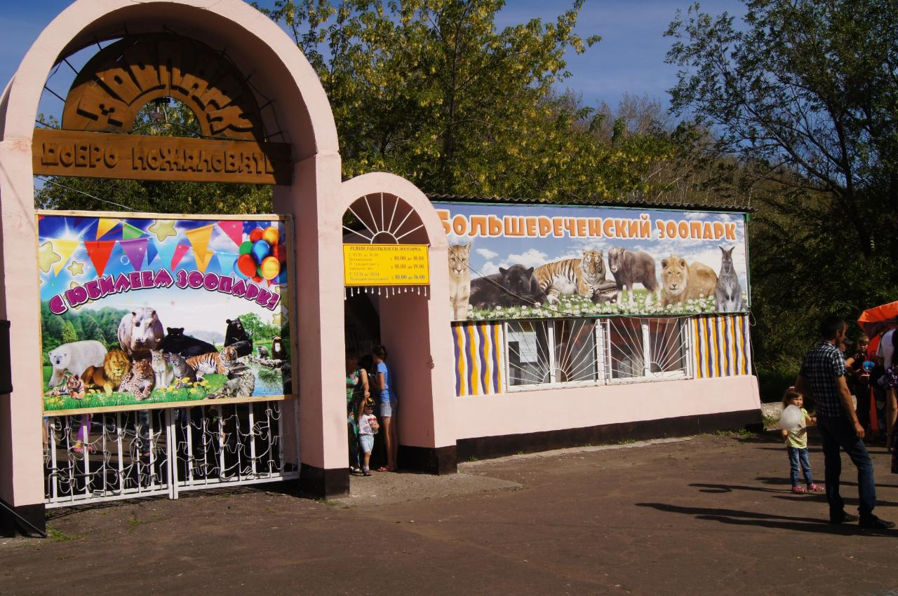Бюджетное учреждение культуры Омской области «Государственный Большереченский Зоопарк имени В. Д. Соломатина» — уникальный зоопарк для нашей страны. Это единственный в России зоопарк в сельской местности. Он расположен в Омской области, в пойме реки Большая (рядом с ее впадением в Иртыш) на территории в 9 га. Несмотря на то, что Большереченский зоопарк удален от Омска на 200 км, в год его посещают более 100 тысяч туристов, как гостей региона, так и местных жителей.
Страусиная ферма "Омский страус"
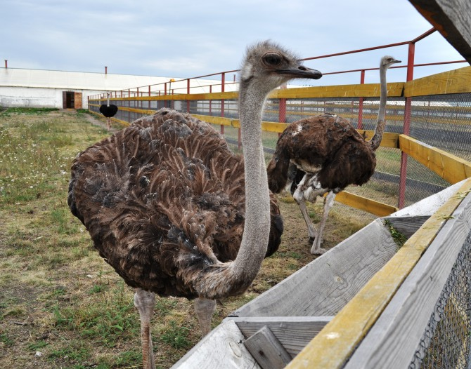Страусиная ферма «Омский страус» расположена недалеко от поселка Усть-Заостровка, существует с 2013 года и уже набрала огромную популярность среди жителей города Омска. На территории фермы обитают африканские страусы, фазаны, ослы, северные олени, лама, уриалы и многие другие животные. Еще одно направление деятельности фермы – разведение маралов. К машине олени привыкли, подпускают на расстояние нескольких метров, позволяют фотографировать. На ферме также есть кафе, качели и надувной батут для малышей, небольшой пруд, в котором можно покормить рыбок.
Мотель "Уют парк"
Перейти на сайт...
Гостиница "СИБИРЬ"
Перейти на сайт...
Гостиный двор "Окунево"
Перейти на сайт...
Гостиница в Черлаке
Гостиница "Турист"
Перейти на сайт...
Отель "Белатара"
Перейти на сайт...